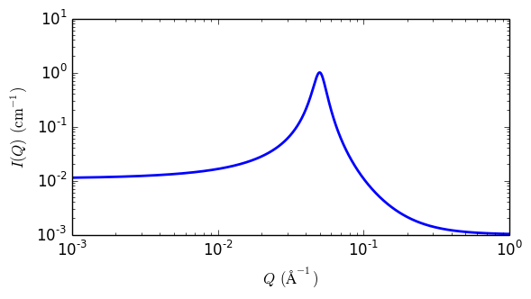

peak_lorentz
A Lorentzian peak on a flat background
| Parameter | Description | Units | Default value |
|---|---|---|---|
| scale | Source intensity | None | 1 |
| background | Source background | cm-1 | 0.001 |
| peak_pos | Peak postion in q | Å-1 | 0.05 |
| peak_hwhm | HWHM of peak | Å-1 | 0.005 |
The returned value is scaled to units of cm-1 sr-1, absolute scale.
This model describes a Lorentzian shaped peak on a flat background.
Definition
The scattering intensity \(I(q)\) is calculated as
\[I(q) = \frac{scale}{\bigl(1+\bigl(\frac{q-q_0}{B}\bigr)^2\bigr)} + background\]
with the peak having height of \(I_0\) centered at \(q_0\) and having a HWHM (half-width half-maximum) of B.
For 2D data the scattering intensity is calculated in the same way as 1D, where the \(q\) vector is defined as
\[q = \sqrt{q_x^2 + q_y^2}\]

Fig. 95 1D plot corresponding to the default parameters of the model.
References
None.